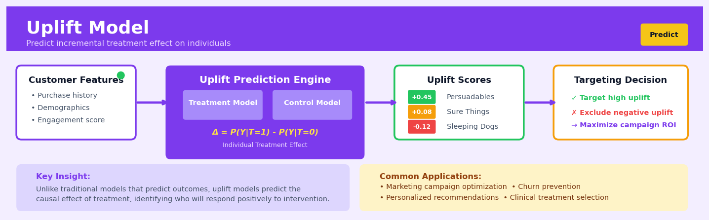

Uplift Model#


The biggest mistake teams make with uplift modeling is trying to implement it without proper A/B test data for training. You need historical randomized experiments where some customers received treatment and others didn't, otherwise your model will just learn correlations instead of causal effects. Also, never forget about the sleeping dogs segment—customers with negative uplift who you should actively avoid targeting because your intervention actually makes them less likely to convert.
The 60-Second Version#
What it does: Uplift modelling identifies which customers will respond positively only if you intervene, filtering out those who would convert anyway or never convert at all.
When to use it: Use it when interventions are costly or intrusive—marketing campaigns, discounts, sales calls—and you need to target only those individuals who will change their behaviour because of your action.
What you get back: A ranked list of individuals scored by how much the treatment will increase their likelihood of the desired outcome, allowing you to focus resources where they’ll actually make a difference.
Difficulty |
Advanced |
Typical runtime |
Minutes to hours on 100K rows |
What you bring |
Historical data with treatment assignment, outcomes for both treated and untreated groups, and individual characteristics |
What you get |
Individual-level uplift scores ranking persuadability |
Heuristix bucket |
Predict — Machine Learning & Forecasting |
Uplift models require randomized or quasi-randomized treatment assignment in your historical data—without it, you’re measuring correlation, not causation.
Learning Objectives#
After reading this chapter, a business user will be able to:
Distinguish between situations where you need to predict uplift (causal effect of an action) versus situations where predicting response rates alone is sufficient, using examples from marketing campaigns, retention programs, and policy interventions.
Interpret uplift scores and segmentation results to identify persuadables (who respond positively to treatment), sure things (who respond regardless), lost causes (who don’t respond either way), and sleeping dogs (who respond negatively to treatment).
Design targeted intervention strategies by allocating limited resources to high-uplift segments while avoiding treating individuals who would be harmed or who would convert without intervention.
After reading this chapter, a data scientist will be able to:
Implement uplift models using both meta-learner approaches (T-learner, S-learner, X-learner) and specialized uplift algorithms (causal trees, uplift random forests), selecting the appropriate method based on data characteristics and business constraints.
Evaluate uplift model performance using metrics specific to causal effects (Qini curves, uplift curves, AUUC) rather than standard classification metrics, and tune model parameters to maximize incremental gains rather than overall accuracy.
Diagnose common failure modes including insufficient randomization in training data, class imbalance between treatment and control groups, confounding variables that bias treatment assignment, and model predictions that reverse-rank the true uplift ordering.
Overview#
Uplift modelling (also known as incremental response modelling, true lift modelling, or net lift modelling) is a class of supervised machine learning techniques that estimate the causal effect of a treatment on an individual’s outcome, rather than simply predicting the outcome itself. Its core purpose is to identify which individuals will change their behaviour because of an intervention—not merely those who are likely to exhibit the target behaviour regardless. Uplift modelling belongs to the family of heterogeneous treatment effect estimation methods and sits at the intersection of causal inference and predictive machine learning.
When to Use This#
Use this when you have experimental data: Uplift models require data from a randomised controlled trial (or a credible natural experiment) where some units received a treatment and others did not. This is essential for identifying causal effects.
Use this when you want to optimise treatment allocation: If you have a limited budget for marketing contacts, discounts, or interventions, uplift models help you target those who will respond because of the treatment rather than those who would have responded anyway.
Use this when there are “sleeping dogs”: In scenarios where contacting certain customers could actually cause harm (e.g., reminding them to cancel, or annoying them into churning), uplift models can identify these negative-response segments and recommend exclusion.
Use this when standard response models waste resources: Traditional propensity models often target “sure things” (people who would convert regardless) and ignore “persuadables” (people who only convert if treated). Uplift modelling corrects this misallocation.
Use this when you need to measure incremental impact: For marketing attribution, pricing experiments, or operational interventions, uplift models quantify the true lift attributable to each action at the individual level.
Use this when treatment effects are heterogeneous: If you suspect that different customer segments respond differently to the same intervention, uplift models can discover and exploit this heterogeneity.
Do NOT use this when you lack experimental variation: Without randomisation or a valid quasi-experimental design, you cannot credibly estimate causal effects. Observational data with selection bias will produce misleading uplift estimates.
Do NOT use this when the treatment is universal: If everyone must receive (or has received) the same treatment, there is no control group and no uplift to estimate.
Do NOT use this for pure prediction tasks: If you only need to predict who will churn, buy, or default—without deciding whether to intervene—a standard classification model is simpler and more appropriate.
Do NOT use this when sample sizes are small: Uplift estimation requires dividing data into treatment and control groups, effectively halving the effective sample size. Small experiments may produce unstable uplift estimates.
Questions This Answers#
Targeting and Personalization#
Who should we actually target with this promotion — and who should we exclude because they’ll buy anyway?
If we send this email campaign to our entire database of 2 million customers, how much are we wasting on people who don’t need the nudge?
Which customers will churn if we don’t intervene, but will stay if we offer them a retention incentive?
Are we giving discounts to customers who would have purchased at full price anyway?
Should we focus our limited sales team’s time on prospects who are on the fence, or the ones who look most promising?
Resource Optimization and ROI#
What’s the real incremental revenue from our loyalty program — not just total revenue from members?
If we have budget to contact only 30% of our customer base, which segment will give us the highest return on that investment?
Are our current marketing campaigns actually changing behavior, or are we just subsidizing purchases that would have happened regardless?
How much of our $5M promotion budget is genuinely driving new sales versus rewarding existing intent?
Which customers should get the premium white-glove onboarding experience, and which ones will convert fine with our standard process?
Strategy and Decision-Making#
Should we offer free trials to everyone who lands on our pricing page, or only to specific visitor types?
For our next product launch, who actually needs the early-bird discount to convert versus who’s already decided to buy?
Are we over-treating some customer segments with too many touchpoints when less would work just as well?
Which version of our intervention works best for people who are genuinely persuadable — not just overall response rates?
How It Works#
Imagine you manage a coffee shop and you’re considering offering a loyalty card program. You notice that some customers already come in five times a week—they’re die-hard fans who don’t need extra motivation. Others never come more than once a month, no matter what you offer. But there’s a third group: regulars who visit twice a week and might visit four times if given the right nudge. The loyalty card costs money to administer, so you want to give it only to people in that third group—the “persuadables” who will actually change their behavior because of your program. Uplift modeling is the technique that identifies exactly who those people are.
TRADITIONAL MODEL UPLIFT MODEL
(predicts outcome) (predicts treatment effect)
All Customers Treatment vs Control Groups
↓ ↓
┌─────────────┐ ┌──────────┬──────────┐
│ Who will │ │ TREATED │ CONTROL │
│ buy most? │ │ (got ad) │ (no ad) │
├─────────────┤ ├──────────┼──────────┤
│ Alice: 90% │ │ Alice │ Bob │
│ Bob: 85% │ │ Buy: 90% │ Buy: 88% │
│ Carol: 40% │ │ │ │
│ Dan: 30% │ │ Carol │ Dan │
└─────────────┘ │ Buy: 42% │ Buy: 38% │
└──────────┴──────────┘
↓
┌─────────────────────┐
│ UPLIFT SCORE │
├─────────────────────┤
│ Alice: +2% (small) │
│ Carol: +4% (big!) │
└─────────────────────┘
Carol is persuadable!
Step 1: Split customers into two groups randomly. Half receive the treatment—maybe a promotional email—while the other half receives nothing. This creates a natural experiment where the only systematic difference between groups is whether they got the treatment.
Step 2: Observe what happens to both groups. Track the outcome you care about—purchases, sign-ups, clicks. Some people in the treatment group will convert, and some in the control group will too. The raw numbers tell you how each group behaved.
Step 3: Build models that predict outcomes for each group separately. The algorithm learns patterns in both groups: what kind of person buys when they see the email, and what kind of person buys even without it. It’s training two prediction models side by side.
Step 4: Calculate the difference between predictions for each individual. For every customer, estimate what would happen if they received the treatment versus if they didn’t. The difference is their uplift score—how much the treatment would change their behavior specifically.
Step 5: Rank everyone by their uplift score. Some people have high uplift (persuadables), some have zero or negative uplift (those who would buy anyway or who are actually turned off by marketing). You now have a prioritized list showing exactly who benefits from intervention.
Step 6: Target only the high-uplift individuals. Deploy your campaign, loyalty program, or intervention exclusively to people whose behavior you can actually influence, maximizing impact while minimizing wasted effort and cost.
The key insight: Uplift modeling exploits the fundamental difference between prediction and causation—by comparing what happens with and without treatment, it isolates who actually responds to your action rather than who was already going to act.
The Intuition#
Imagine you are a marketing director deciding which customers should receive a promotional email offering 20% off their next purchase. A traditional approach would build a response model to predict who is likely to buy and then target those with the highest predicted probabilities. But this strategy has a fundamental flaw: many of your highest-probability customers were going to buy anyway. Sending them a discount simply gives away margin on sales you would have captured at full price.
The insight behind uplift modelling is that customers fall into four distinct archetypes. Sure Things will purchase regardless of whether they receive the email—targeting them wastes your discount budget. Lost Causes will not purchase no matter what you do—targeting them wastes your marketing spend. Persuadables will purchase only if they receive the promotion—these are your true targets. Finally, Sleeping Dogs would have purchased, but receiving the email actually irritates them enough to not buy (or even to churn)—you should actively avoid these customers. A standard response model cannot distinguish among these groups because it only models \(P(Y=1|X)\), conflating all sources of positive outcomes. Uplift modelling explicitly estimates the difference in outcomes between the treated and untreated states for each individual.
Think of it like a medical analogy. A doctor does not prescribe a drug to everyone who might recover—she prescribes it to those who will recover because of the drug. A patient with a mild cold will get better on their own; a patient with a terminal condition may not respond to treatment. The value of the drug lies in the patients whose recovery depends on receiving it. Uplift modelling is the machine learning equivalent of identifying these patients, enabling precision targeting that maximises the causal impact of your limited intervention resources.
The Mathematics#
Potential Outcomes Framework#
We adopt the Rubin-Neyman potential outcomes framework. For each individual \(i\), define:
\(Y_i(1)\): the potential outcome if individual \(i\) receives treatment
\(Y_i(0)\): the potential outcome if individual \(i\) does not receive treatment
\(T_i \in \{0, 1\}\): the treatment assignment indicator
\(X_i \in \mathbb{R}^p\): a vector of pre-treatment covariates
The observed outcome is:
The fundamental problem of causal inference is that we observe only one potential outcome per individual—never both simultaneously.
Individual Treatment Effect and CATE#
The Individual Treatment Effect (ITE) is defined as:
Since \(\tau_i\) is never directly observable, we estimate the Conditional Average Treatment Effect (CATE):
This is the expected treatment effect for individuals with covariate values \(X = x\).
Identification Assumptions#
Uplift modelling relies on three core assumptions:
Unconfoundedness (Ignorability): Conditional on \(X\), treatment assignment is independent of potential outcomes:
This is satisfied by design in randomised experiments.
Positivity (Overlap): Every individual has a positive probability of receiving either treatment:
Stable Unit Treatment Value Assumption (SUTVA): The potential outcomes of one individual are unaffected by the treatment assignment of others, and there is only one version of the treatment.
Estimation Approaches#
Two-Model Approach (T-Learner)#
The simplest method fits two separate models:
The uplift estimate is:
While intuitive, this approach can suffer from high variance because the models are trained independently and may have correlated errors that amplify when differenced.
Single-Model Approach (S-Learner)#
This approach fits one model on pooled data with treatment as a feature:
The uplift is:
The risk is that if treatment has a small effect relative to other features, the model may fail to capture treatment heterogeneity.
Class Variable Transformation (CVT)#
A clever reformulation creates a new target variable. For a binary outcome with equal treatment/control proportions:
where \(e(X_i) = P(T_i = 1 | X_i)\) is the propensity score. Under unconfoundedness:
This allows using standard regression techniques to directly estimate CATE.
Modified Outcome Transformation (Doubly Robust)#
The augmented inverse propensity weighted (AIPW) estimator provides doubly robust CATE estimation:
This estimator is consistent if either the outcome models or the propensity model is correctly specified.
Uplift Decision Trees#
Uplift-specific tree algorithms use splitting criteria that maximise heterogeneity in treatment effects. A common criterion is the uplift variance:
where \(N_L, N_R\) are sample sizes in left/right child nodes and \(\hat{\tau}\) values are node-level uplift estimates.
Alternative criteria include:
Euclidean distance: \(\sum_k (\hat{p}_k^T(L) - \hat{p}_k^C(L))^2 + (\hat{p}_k^T(R) - \hat{p}_k^C(R))^2\)
Kullback-Leibler divergence: \(D_{KL}(P^T || P^C)\)
Chi-squared divergence
Edge Cases and Degenerate Conditions#
Zero overlap: When \(e(x) = 0\) or \(e(x) = 1\) for some \(x\), CATE is not identified in that region.
Homogeneous treatment effects: When \(\tau(x) = \tau\) for all \(x\), uplift modelling reduces to ATE estimation; heterogeneous methods add unnecessary variance.
Extremely rare outcomes: With very low base rates, both treatment and control groups may have zero events in subgroups, making uplift estimation unstable.
Understanding the Mathematics#
Understanding the Mathematics#
The Individual Treatment Effect (ITE)#
Read it aloud: The treatment effect for person i equals the outcome if person i receives treatment minus the outcome if that same person does not receive treatment.
What each symbol means:
τᵢ (tau) = the causal effect of treatment on individual i
Yᵢ(1) = the outcome for person i when they do receive treatment
Yᵢ(0) = the outcome for person i when they don’t receive treatment
The subtraction (–) isolates what the treatment itself contributed
A concrete numerical example: Imagine you’re deciding whether to send customer Maria a discount coupon. If Maria receives the coupon, she spends \(85 this month: Yᵢ(1) = 85. If Maria doesn't receive it, she would have spent \)80 anyway: Yᵢ(0) = 80. The treatment effect is τᵢ = 85 – 80 = \(5. The coupon caused Maria to spend an *extra* \)5.
Why this equation matters: This is the holy grail of uplift modelling—the true incremental value of your intervention on each individual—but you can never observe both numbers for the same person at the same time.
The Fundamental Problem of Causal Inference#
Read it aloud: For any given person, we can only ever see what happened under the treatment they actually received—we never see what would have happened under the alternative.
What each symbol means:
“Either…or” = mutual exclusivity
Yᵢ(1) = the factual outcome if they were treated
Yᵢ(0) = the counterfactual outcome if they were not treated
A concrete numerical example: You send Maria the coupon. She spends \(85. You observe Yᵢ(1) = 85. But you have *no idea* whether she would have spent \)80, \(50, or \)90 without it. That counterfactual Yᵢ(0) is forever hidden. You can’t rewind time and not send her the coupon to compare.
Why this equation matters: This is why uplift modelling is hard—we’re trying to estimate something we can literally never observe directly, forcing us to use statistical methods and randomized experiments.
Conditional Average Treatment Effect (CATE)#
Read it aloud: The treatment effect for people with characteristics x equals the expected difference in outcomes between receiving and not receiving treatment, among all people who share those same characteristics.
What each symbol means:
τ(x) = average treatment effect for a subgroup defined by features x
E[…] = the expected value (average) across many people
Y(1) – Y(0) = individual treatment effects
| X = x = “given that” or “among people with features x”
x = observable characteristics (age, purchase history, location, etc.)
A concrete numerical example: Consider all customers who are female, aged 25–34, and have purchased twice before (x = these three features). Half randomly get a coupon, half don’t. The coupon group spends an average of \(78. The control group averages \)65. The CATE is τ(x) = 78 – 65 = $13 for this demographic segment.
Why this equation matters: Since we can’t measure individual treatment effects directly, we estimate them by averaging across similar people—this turns an impossible individual prediction into a solvable group estimation problem.
Uplift Score Decomposition#
Read it aloud: Uplift equals the probability of a positive outcome given treatment and features, minus the probability of a positive outcome given no treatment and the same features.
What each symbol means:
P(…) = probability
Y=1 = the desired outcome occurs (purchase, click, conversion)
T=1 = treatment was given
T=0 = no treatment (control group)
X = customer features
A concrete numerical example: Among high-value customers (X), 40% who receive an email offer make a purchase: P(Y=1|T=1, X) = 0.40. Among similar customers who receive no email, 35% purchase anyway: P(Y=1|T=0, X) = 0.35. The uplift is 0.40 – 0.35 = 0.05, or 5 percentage points. You increase conversion by 5% through the email.
Why this equation matters: This is how uplift models actually make predictions—by learning separate probabilities for treated and control groups, then subtracting to isolate the true incremental effect of your action.
The Big Picture#
The mathematics of uplift modelling tackles a profound challenge: estimating something you cannot directly observe. Unlike standard prediction, which asks “what will happen?”, uplift asks “what will happen because of me?” The equations formalize the gap between factual and counterfactual worlds, then use group-level comparisons to approximate individual-level effects. This approach is necessary because simpler methods—like predicting who will buy—confuse natural behaviour with treatment-induced behaviour, wasting resources on people who would convert anyway. The mathematical essence is this: we estimate causal effects by comparing similar people who did and didn’t receive treatment, then use those patterns to predict who will change their behaviour if we intervene.
Python Implementation#
import numpy as np
import pandas as pd
from sklearn.model_selection import train_test_split
from sklearn.ensemble import RandomForestClassifier, RandomForestRegressor
from sklearn.linear_model import LogisticRegression
import matplotlib.pyplot as plt
# Set random seed for reproducibility
np.random.seed(42)
# =============================================================================
# Generate synthetic data from a marketing campaign experiment
# =============================================================================
n_samples = 10000
# Customer features
age = np.random.normal(45, 15, n_samples).clip(18, 80)
income = np.random.exponential(50000, n_samples).clip(15000, 200000)
tenure_months = np.random.exponential(24, n_samples).clip(1, 120)
purchase_history = np.random.poisson(5, n_samples)
# Random treatment assignment (50/50 split)
treatment = np.random.binomial(1, 0.5, n_samples)
# Define true uplift function (heterogeneous treatment effects)
# Younger, lower-income customers are more persuadable
# High tenure customers are "sleeping dogs" - negative uplift
true_uplift = (
0.15 * (age < 35).astype(float) + # Young customers respond well
0.10 * (income < 40000).astype(float) - # Lower income more price sensitive
0.05 * (tenure_months > 60).astype(float) + # Long tenure = sleeping dogs
0.02 * (purchase_history > 3).astype(float) # Engaged customers respond
)
# Base conversion probability (without treatment)
base_prob = 1 / (1 + np.exp(-(
-2.5 +
0.02 * (age - 45) +
0.00001 * income +
0.01 * tenure_months +
0.05 * purchase_history
)))
# Observed outcome: Y = T * (base + uplift) + (1-T) * base + noise
prob_if_treated = np.clip(base_prob + true_uplift, 0, 1)
prob_if_control = base_prob
conversion = np.where(
treatment == 1,
np.random.binomial(1, prob_if_treated),
np.random.binomial(1, prob_if_control)
)
# Create DataFrame
df = pd.DataFrame({
'age': age,
'income': income,
'tenure_months': tenure_months,
'purchase_history': purchase_history,
'treatment': treatment,
'conversion': conversion,
'true_uplift': true_uplift
})
print("Dataset shape:", df.shape)
print("\nTreatment group statistics:")
print(df.groupby('treatment')['conversion'].agg(['mean', 'count']))
# =============================================================================
# Method 1: Two-Model Approach (T-Learner)
# =============================================================================
print("\n" + "="*60)
print("TWO-MODEL APPROACH (T-Learner)")
print("="*60)
features = ['age', 'income', 'tenure_months', 'purchase_history']
X = df[features]
y = df['conversion']
T = df['treatment']
# Split data by treatment
X_treat = X[T == 1]
y_treat = y[T == 1]
X_control = X[T == 0]
y_control = y[T == 0]
# Fit separate models for treatment and control groups
model_treat = RandomForestClassifier(n_estimators=100, max_depth=5, random_state=42)
model_control = RandomForestClassifier(n_estimators=100, max_depth=5, random_state=42)
model_treat.fit(X_treat, y_treat)
model_control.fit(X_control, y_control)
# Predict uplift as difference in predicted probabilities
pred_treat = model_treat.predict_proba(X)[:, 1]
pred_control = model_control.predict_proba(X)[:, 1]
uplift_two_model = pred_treat - pred_control
df['uplift_two_model'] = uplift_two_model
print(f"\nUplift statistics (Two-Model):")
print(f" Mean predicted uplift: {uplift_two_model.mean():.4f}")
print(f" Std predicted uplift: {uplift_two_model.std():.4f}")
print(f" Correlation with true uplift: {np.corrcoef(uplift_two_model, true_uplift)[0,1]:.4f}")
# =============================================================================
# Method 2: Single-Model Approach (S-Learner)
# =============================================================================
print("\n" + "="*60)
print("SINGLE-MODEL APPROACH (S-Learner)")
print("="*60)
# Include treatment as a feature
X_with_treatment = df[features + ['treatment']]
model_single = RandomForestClassifier(n_estimators=100, max_depth=6, random_state=42)
model_single.fit(X_with_treatment, y)
# Predict with treatment=1 and treatment=0
X_as_treated = X.copy()
X_as_treated['treatment'] = 1
X_as_control = X.copy()
X_as_control['treatment'] = 0
pred_as_treated = model_single.predict_proba(X_as_treated)[:, 1]
pred_as_control = model_single.predict_proba(X_as_control)[:, 1]
uplift_single_model = pred_as_treated - pred_as_control
df['uplift_single_model'] = uplift_single_model
print(f"\nUplift statistics (Single-Model):")
print(f" Mean predicted uplift: {uplift_single_model.mean():.4f}")
print(f" Std predicted uplift: {uplift_single_model.std():.4f}")
print(f" Correlation with true uplift: {np.corrcoef(uplift_single_model, true
## Visualisations


## Using This in Heuristix
### What You'll Need
The Uplift Model node expects a dataset where each row represents an individual who was either treated or not treated. You need:
- **Treatment indicator** (binary): 1 for treated, 0 for control
- **Outcome variable** (binary): 1 for converted/responded, 0 otherwise
- **Features** (numeric or categorical): individual characteristics used for prediction
**Example input data:**
| customer_id | treatment | purchased | age | previous_purchases | segment |
|-------------|-----------|-----------|-----|-------------------|---------|
| 1001 | 1 | 1 | 34 | 2 | premium |
| 1002 | 0 | 0 | 28 | 0 | basic |
| 1003 | 1 | 0 | 45 | 5 | premium |
The node works best with randomized experiment data where treatment was assigned randomly, but it can also work with observational data if you're careful about confounding.
### Configuration Parameters
| Parameter | What It Controls | Default | When to Change |
|-----------|-----------------|---------|----------------|
| **Treatment Column** | Which column indicates treatment (1) vs control (0) | - | Always specify this first |
| **Outcome Column** | Which column contains your target outcome | - | Required—your conversion/response metric |
| **Model Type** | Algorithm approach (Two-Model, X-Learner, S-Learner) | Two-Model | X-Learner for small treatment groups; S-Learner when treatment effect is uniform |
| **Cross-Validation Folds** | Number of folds for model validation | 5 | Increase to 10 for small datasets; reduce to 3 for very large ones |
| **Minimum Uplift Threshold** | Score above which individuals are considered "persuadables" | 0.0 | Set to 0.05 or 0.10 to focus on clearer lift signals |
| **Feature Selection** | Auto-select relevant features or use all | Auto | Override to "All" when you have domain knowledge about drivers |
### What You'll Get Out
The node adds these columns to your dataset:
- **`uplift_score`**: The estimated causal effect—how much more likely this person is to convert *because of* treatment (ranges from -1 to +1)
- **`segment`**: Automatically assigned group (Persuadables, Sure Things, Lost Causes, Sleeping Dogs)
- **`treatment_probability`**: Predicted conversion if treated
- **`control_probability`**: Predicted conversion if not treated
**Visualizations displayed:**
- **Uplift curve**: Shows cumulative gain vs. random targeting—steeper is better
- **Qini curve**: Alternative performance metric, robust to class imbalance
- **Segment distribution**: Pie chart showing how your population splits across segments
- **Feature importance**: Which characteristics drive heterogeneous treatment effects
### Quick Start
1. **Connect your experiment data** to the Uplift Model node input
2. **Select your treatment column** (the binary indicator of who got the offer/message)
3. **Select your outcome column** (e.g., "made_purchase" or "clicked")
4. **Leave Model Type as "Two-Model"** for your first run—it's the most interpretable
5. **Run the node** and examine the segment distribution
6. **Connect to a Filter node** and filter for `segment = 'Persuadables'`—these are your high-value targets
7. **Route that segment** to your campaign execution or export node
### Connecting Downstream
Most commonly, you'll connect this node to:
- **Filter node** → isolate Persuadables or high uplift scores (> 0.1) for targeted campaigns
- **Model Evaluation node** → compare uplift model performance against traditional response models
- **Export node** → send scored individuals to your marketing automation platform
- **A/B Test Designer node** → design a follow-up test focusing on uncertain segments
### Practical Tips from Experience
**Beware of "Sure Things"**: People with high uplift scores are valuable, but don't ignore those with *negative* uplift (Sleeping Dogs)—targeting them actively hurts your outcome. Exclude them deliberately.
**Check your balance**: If your treatment/control split is more extreme than 80/20, consider using X-Learner instead of Two-Model—it handles imbalanced groups better.
**Start with a hold-out test**: Before rolling out to your full list, run a small randomized test where you target Persuadables vs. random assignment. This validates your model in production.
**Feature engineering matters here**: Unlike standard prediction models, uplift models benefit enormously from interaction terms and segment indicators that capture *who responds differently* to treatment.
**Don't confuse correlation with causation**: The model only estimates causal effects if your original data came from a proper experiment or you've controlled for confounders. Garbage in, garbage out applies doubly here.
## Config Recipes
### Recipe 1: Quick Exploration
- **When to use:** First-pass analysis on a new campaign dataset where you need directional insights within hours, not days.
- **Settings:**
| Parameter | Value | Why |
|-----------|-------|-----|
| `method` | `"two_model"` | Fastest to train; uses standard classifiers |
| `base_learner` | `RandomForestClassifier(n_estimators=100, max_depth=8)` | Limits tree complexity for speed |
| `cv_folds` | `3` | Minimum for reasonable validation |
| `min_samples_treatment` | `100` | Prevents overfitting in small subgroups |
| `uplift_threshold` | `0` | No filtering; see full distribution |
- **What you get:** Fast segmentation into persuadables, sure things, lost causes, and sleeping dogs with ~70-80% confidence.
- **Trade-off:** Lower precision on individual predictions; may miss subtle heterogeneous effects in complex interactions.
---
### Recipe 2: Production-Grade Marketing Deployment
- **When to use:** Deploying uplift targeting for a high-value campaign where false positives cost real money (e.g., retention offers, discount allocation).
- **Settings:**
| Parameter | Value | Why |
|-----------|-------|-----|
| `method` | `"causal_forest"` or `"x_learner"` | Rigorous causal estimators with theoretical guarantees |
| `base_learner` | `GradientBoostingClassifier(n_estimators=500, learning_rate=0.01, max_depth=5)` | Deep, regularized models for nuanced patterns |
| `cv_folds` | `10` | Robust standard error estimates |
| `min_samples_treatment` | `500` | Conservative threshold for targeting |
| `calibration` | `isotonic` | Ensures uplift scores are interpretable as probabilities |
| `feature_importance` | `"shap"` | Explainability for auditing and trust |
- **What you get:** Trustworthy uplift scores suitable for automated decisioning, with explainable drivers per segment.
- **Trade-off:** 5-10x longer training time; requires larger sample sizes (minimum ~50K observations recommended).
---
### Recipe 3: Imbalanced Treatment Assignment
- **When to use:** Observational data where treatment was given to only 5-15% of population (e.g., proactive customer service outreach logs).
- **Settings:**
| Parameter | Value | Why |
|-----------|-------|-----|
| `method` | `"s_learner"` | Pools data efficiently when treatment group is small |
| `propensity_weighting` | `True` | Corrects for selection bias in who received treatment |
| `propensity_model` | `LogisticRegression(C=0.1, class_weight='balanced')` | Handles class imbalance explicitly |
| `uplift_normalization` | `"control_group_rate"` | Anchors estimates to realistic baseline |
| `bootstrap_iterations` | `200` | Quantifies uncertainty given small treatment N |
- **What you get:** Unbiased uplift estimates despite skewed treatment assignment, with confidence intervals.
- **Trade-off:** Requires careful propensity modeling; sensitive to unmeasured confounders.
---
### Recipe 4: Negative Outcome Prevention
- **When to use:** Identifying whom NOT to contact because intervention causes harm (e.g., survey fatigue, brand perception damage from excessive emails).
- **Settings:**
| Parameter | Value | Why |
|-----------|-------|-----|
| `method` | `"two_model"` with negative class focus | Explicitly models downside |
| `cost_matrix` | `[[0, -1], [-5, 0]]` | Heavily penalizes false positives (harmful contacts) |
| `negative_uplift_threshold` | `-0.02` | Flag anyone with even slight negative effect |
| `segment_separately` | `"sleeping_dogs"` | Create exclusion list, not targeting list |
- **What you get:** Suppression list of individuals likely harmed by contact, minimizing brand damage.
- **Trade-off:** Conservative approach may exclude neutral cases, slightly reducing reach.
## Business Applications
**Financial Services**
A regional credit card issuer with 3 million cardholders faced a classic challenge: which inactive customers should receive retention offers? Traditional models predicted who was likely to churn, but many of those customers would have stayed regardless—wasting offer budgets on the "sure things." By deploying an uplift model, the issuer identified the *persuadables*—customers who would leave without an offer but stay with one. This redirected 40% of the retention budget away from customers who didn't need incentives, improved retention lift by 23%, and generated $4.7M in additional annual revenue while actually reducing promotional spend.
**Retail & E-commerce**
A European fashion retailer with 800 physical stores and 5M loyalty members wanted to optimize their email promotion strategy. Their traditional approach sent discount codes to customers predicted to purchase, but analytics revealed 60% of recipients would have bought at full price anyway. An uplift model segmented customers into four groups: persuadables (send offer), sure things (don't discount), lost causes (don't contact), and sleeping dogs (those for whom an offer actually *decreases* purchase likelihood). The result: email marketing ROI increased from 3:1 to 7:1, margin improved by 18%, and—surprisingly—customer satisfaction scores rose because high-intent buyers received fewer "spammy" discount emails.
**Healthcare & Pharmaceuticals**
A US hospital network serving 400,000 patients annually struggled with no-show rates for specialist appointments, which cost the system approximately $2.8M yearly in wasted capacity. They needed to know which patients would benefit from reminder calls versus those who would attend regardless. Their uplift model identified that only 22% of patients were genuinely influenced by reminders—the rest either always showed up or never did regardless of outreach. By targeting interventions precisely, they reduced no-shows by 31% while cutting reminder call volume (and associated labour costs) by 54%.
**Insurance**
A national auto insurer wanted to reduce policy lapses but discovered through uplift modelling that their blanket renewal reminder campaigns were backfiring with certain segments. For some customers, frequent renewal reminders actually *increased* lapse rates by drawing attention to shopping alternatives. The uplift model identified sleeping dogs (9% of the base) and persuadables (34%), enabling differentiated communication strategies. Policy retention improved by 2.3 percentage points—worth $8.1M annually—while marketing costs fell 27%.
**Manufacturing**
A industrial equipment manufacturer with a distributed dealer network needed to predict which equipment owners would benefit from proactive maintenance outreach versus self-service support. Uplift modelling revealed that 40% of customers found proactive calls intrusive and were more likely to churn, while 28% significantly increased contract renewal rates when contacted. This insight allowed them to triple the ROI on their customer success team from 2.1:1 to 6.8:1.
**Telecoms**
A mobile network operator with 12M subscribers used uplift models to optimize upgrade offers for customers approaching contract end. Traditional models predicted who would upgrade, but the uplift approach identified who would upgrade *only if offered a device discount*. This prevented margin erosion by withholding subsidies from customers who would upgrade regardless, increasing average margin per upgrade from £47 to £89 and saving £12.3M annually.
**Marketing & Advertising**
A programmatic advertising platform serving mid-market e-commerce brands deployed uplift modelling to move beyond click-through prediction toward *incremental* conversion prediction. By identifying users who would convert only after seeing an ad (versus those on a natural purchase path), they reduced wasted ad spend by 38% while maintaining conversion volume. Client campaigns shifted from average 4.2× ROAS to 7.1× ROAS.
**SaaS & Technology**
A B2B SaaS company with 15,000 customers used uplift models to identify which trial users needed sales intervention versus those who would self-serve convert. They discovered that 19% of trials—"sleeping dogs"—had lower conversion when contacted by sales, preferring product-led self-service. Respecting this preference while intensifying outreach to persuadables increased trial-to-paid conversion from 18% to 26%.
**Public Sector**
A metropolitan tax authority applied uplift modelling to delinquent payment reminders, discovering that certain taxpayer segments responded better to no intervention initially (eventually self-correcting) versus escalating communications. This reduced collection costs by 29% while maintaining collection rates.
## Worked Example
Sarah Chen, a senior data scientist at Meridian Insurance, sat in a conference room watching the head of marketing scroll through a spreadsheet with increasing frustration. "We sent 200,000 promotional emails last quarter offering premium discounts," he said, "and our renewal rate went up by 2%. But I have no idea if the emails actually *caused* that increase or if those customers were going to renew anyway. We're basically subsidizing people who were already loyal."
The question hit Sarah immediately: they weren't trying to predict who would renew—they needed to identify who would renew *because of* the offer. This was a classic uplift problem, and it mattered financially. If even 30% of the discount recipients would have renewed without any incentive, Meridian was leaving hundreds of thousands of dollars on the table every quarter.
Sarah pulled six months of historical data from a previous randomized email campaign. The dataset included 50,000 customers, half of whom had randomly received a discount offer. It was messier than she'd hoped—some records had missing claim counts, and the age field had clearly been entered inconsistently—but it was workable.
| customer_id | treatment | renewed | age | months_customer | prior_claims |
|-------------|-----------|---------|-----|-----------------|--------------|
| 10034 | 1 | 1 | 34 | 18 | 0 |
| 10035 | 0 | 0 | 52 | 7 | 2 |
| 10036 | 1 | 1 | 29 | 31 | 1 |
| 10037 | 0 | 1 | 45 | 64 | 0 |
| 10038 | 1 | 0 | 38 | 12 | 3 |
Sarah decided to use a two-model uplift approach—building separate models for treated and control groups, then comparing their predictions. She considered the transformed outcome method too, but given her relatively clean randomization and binary outcome, the two-model approach felt more interpretable for her audience. She configured gradient boosting models for both groups, kept the learning rate conservative at 0.05, and set a max depth of 4 to avoid overfitting on what were ultimately modest sample sizes per group.
```python
import pandas as pd
from sklearn.model_selection import train_test_split
from sklearn.ensemble import GradientBoostingClassifier
import numpy as np
# Load and prepare data
df = pd.read_csv('customer_renewal_experiment.csv')
df = df.dropna() # Sarah's quick fix for missing values
# Separate treatment and control groups
treated = df[df['treatment'] == 1]
control = df[df['treatment'] == 0]
# Features for modeling
features = ['age', 'months_customer', 'prior_claims']
X_treat = treated[features]
y_treat = treated['renewed']
X_control = control[features]
y_control = control['renewed']
# Train two models - one per group
model_treat = GradientBoostingClassifier(
n_estimators=100, learning_rate=0.05, max_depth=4, random_state=42
)
model_control = GradientBoostingClassifier(
n_estimators=100, learning_rate=0.05, max_depth=4, random_state=42
)
model_treat.fit(X_treat, y_treat)
model_control.fit(X_control, y_control)
# Calculate uplift scores for new customers
new_customers = df[features] # In practice, this would be current customer base
uplift_score = (model_treat.predict_proba(new_customers)[:, 1] -
model_control.predict_proba(new_customers)[:, 1])
# Add uplift scores and segment
df['uplift'] = uplift_score
df['segment'] = pd.qcut(df['uplift'], q=4, labels=['Avoid', 'Neutral', 'Consider', 'Target'])
The results were eye-opening. Sarah created a summary table by uplift quartile:
Segment |
Avg Uplift |
% of Base |
Treatment Effect |
|---|---|---|---|
Target |
+0.24 |
25% |
24% increase |
Consider |
+0.11 |
25% |
11% increase |
Neutral |
+0.03 |
25% |
3% increase |
Avoid |
-0.08 |
25% |
8% decrease |
The “aha moment” came from that bottom quartile. Not only did some customers show zero lift—they actually showed negative uplift. These were long-tenured, low-claim customers who interpreted the discount as a signal that Meridian was desperate or devaluing its service. The offer made them less likely to renew.
Sarah presented these findings to the marketing leadership team the following Thursday. The decision was immediate and specific: target only the top two quartiles with discount offers—roughly 25,000 customers instead of 100,000. For the bottom quartile, suppress promotional emails entirely. For the neutral segment, test a non-monetary approach like enhanced customer service touches.
The next quarter’s campaign delivered a 1.8% renewal lift while mailing 75% fewer discounts. The net impact was $340,000 in saved discount costs while maintaining nearly the same absolute number of incremental renewals.
If Sarah were doing this again, she’d advocate harder for a longer experiment window. Six months felt barely adequate, and she worried about seasonal effects in insurance renewals. She’d also want to test the negative uplift finding more rigorously—it was striking, but based on a relatively small segment, and the business implications of suppressing communications entirely were significant enough to warrant dedicated validation.
Interpreting Your Results#
You’ve just run your first uplift model and you’re staring at metrics you’ve never seen before. Don’t worry—uplift outputs look unfamiliar because they’re measuring something fundamentally different from standard prediction models. Let’s decode what you’re actually looking at.
Uplift Scores (Individual-Level Predictions)#
Plain-English meaning: Each person in your dataset gets an uplift score—typically ranging from negative to positive values. This score estimates how much more likely that person is to convert because of your treatment, compared to doing nothing. A score of +0.15 means this person is 15 percentage points more likely to convert if treated. A score of -0.05 means treating them actually makes them less likely to convert (yes, this happens—some people hate being contacted).
Concrete benchmarks:
Below 0: Negative uplift—these people are harmed by treatment. Never target them.
0 to 0.05: Marginal benefit. Usually not worth the cost of treatment.
0.05 to 0.15: Moderate positive uplift. Your sweet spot for most campaigns.
Above 0.15: Strong uplift. Prioritize these individuals, but verify this isn’t a data artifact.
Red flag: If more than 40% of your population shows negative uplift, your treatment is backfiring broadly. If virtually everyone has identical uplift scores (no spread), your model isn’t detecting heterogeneity—you might as well use a simple A/B test average instead.
Qini Curve & Qini Coefficient#
Plain-English meaning: The Qini curve shows cumulative incremental gains as you target individuals from highest to lowest uplift score. The Qini coefficient (area between your model’s curve and the random targeting line) measures how much better your model is than random selection.
Concrete benchmarks:
Below 0.02: Your model barely beats random. Don’t use it.
0.02–0.08: Decent model. You’re identifying uplift but leaving money on the table.
0.08–0.15: Strong model. Deploy with confidence.
Above 0.15: Excellent—or suspicious. Validate thoroughly before celebrating.
Red flag: If your Qini curve dips below the random line in the middle (crosses it), your model is making systematic errors in rank-ordering. If it only rises in the final 10%, you’re only catching the obvious cases.
Cumulative Gain Chart#
Plain-English meaning: This shows what percentage of all possible uplift you capture by targeting the top X% of scored individuals. If targeting the top 30% captures 70% of possible gains, you’ve found efficient targeting.
Reading multiple outputs together: Cross-reference with cost data. If your cumulative gain chart shows 60% of uplift captured in the top 20%, and your budget only covers 20% of the population, you’ve found your action threshold. If the Qini coefficient is strong (>0.08) but cumulative gains plateau early, you have a small persuadable segment—target narrowly and aggressively.
Treatment Effect Heterogeneity#
Red flag: If your model shows treatment effect variation (difference between highest and lowest deciles) of less than 5 percentage points, you don’t have meaningful heterogeneity. A simple average treatment effect from an A/B test is sufficient—you don’t need uplift modelling complexity.
Sanity Check Checklist#
Do uplift scores have reasonable spread? Calculate the interquartile range. If it’s less than 0.03, you lack meaningful heterogeneity.
Is the control group properly represented? Check your control group size—it should be at least 20% of your data. Smaller means unreliable uplift estimates.
Do high uplift segments have reasonable sample sizes? If your top decile contains fewer than 100 people, those estimates are too noisy to trust.
Does treatment cost align with uplift magnitude? If treatment costs \(5 per person but average uplift only generates \)3 in incremental value, you’ll lose money even with a perfect model.
Are there obvious data leaks? If uplift scores correlate suspiciously with variables measured after treatment, you have leakage.
Good Enough to Act On?#
Deploy your uplift model when: Your Qini coefficient exceeds 0.05, your top 30% of scored individuals capture at least 50% of total gains, you have at least 5 percentage points of treatment effect variation between top and bottom deciles, and the incremental revenue from uplift exceeds treatment costs by at least 2x in your top-scoring segments. Below these thresholds, you’re optimizing noise—stick with simpler approaches or collect more data.
Decision Guidance#
What This Result Is Telling You#
An uplift model tells you who will change their behavior because you contacted them, not just who is likely to respond. This distinction is critical. A traditional model might rank your most loyal customers highest—people who would have purchased anyway. An uplift model identifies the persuadables: customers sitting on the fence who need your intervention to act. It also flags “sleeping dogs”—people who will actually become less likely to buy if you contact them, perhaps because your message annoys them or reminds them of a negative experience.
The model produces a score for each person representing how much more likely they are to convert if treated versus if left alone. A high uplift score means your marketing spend, sales call, or intervention will generate real incremental value. A negative uplift score means you’re better off not contacting that person at all. The middle of the distribution contains people who won’t be influenced either way—spending resources on them generates no return.
Your primary business question shifts from “who will buy?” to “who will buy because we acted?” This reframing can dramatically improve ROI by preventing wasted outreach to customers who don’t need convincing and avoiding outreach that backfires. It transforms resource allocation from a volume game to a precision game.
Decision Points#
If you see this… |
It means… |
Recommended action |
Who acts on this |
|---|---|---|---|
Uplift score in top 20% of distribution (e.g., >0.15 probability increase) |
These individuals are highly persuadable—your intervention drives significant incremental behavior |
Prioritize for campaign inclusion; allocate premium channels (personalized outreach, higher incentives) |
Campaign managers, Marketing operations |
Uplift score near zero (e.g., -0.02 to +0.02 range) |
These individuals will behave the same whether contacted or not—your intervention has no causal effect |
Exclude from campaign to reduce cost; reallocate budget to higher-uplift segments |
Budget owners, Marketing strategists |
Negative uplift score (e.g., <-0.05) |
Your intervention actively harms conversion—these are “sleeping dogs” who react negatively to contact |
Actively suppress from all outreach; consider these a “do not contact” segment |
Campaign managers, Customer experience leads |
Wide confidence intervals on segment-level uplift (e.g., 95% CI spans from -0.10 to +0.20) |
Insufficient data or high variance in this segment—treatment effect is uncertain |
Conduct targeted A/B test on this segment before full deployment; gather more data |
Data science team, Test-and-learn managers |
When to Proceed vs. Investigate Further#
Proceed with confidence when:
Top uplift quintile shows average treatment effect >0.10 with confidence intervals entirely above zero
Negative uplift segment comprises >5% of population and shows statistically significant harm (p<0.05)
Model validation shows uplift curves separating cleanly across treatment/control in holdout data
Business has infrastructure to operationalize multiple treatment strategies simultaneously
Proceed with caution when:
Uplift estimates are positive but confidence intervals include zero for your target segments
Historical test data exists but was not randomized—selection bias may inflate apparent uplift
Treatment effect heterogeneity is low—most people have similar uplift scores (model may not add value over random selection)
Investigate before acting when:
Model trained on data >12 months old and market conditions have shifted materially
Negative uplift segment is unexpectedly large (>20% of population) without clear explanation
Validation metrics show poor calibration—predicted uplift magnitudes don’t match observed test results
Do not use these results yet when:
No proper randomized control group existed in training data—model cannot distinguish correlation from causation
Sample size in training data <5,000 per treatment arm
Key segments have <100 observations—predictions will be unreliable
The Cost of Getting This Wrong#
If you treat uplift scores like traditional propensity scores, you’ll systematically contact people who don’t need convincing while burning budget and goodwill. A financial services company did exactly this, targeting their “high uplift” segment that was actually just high propensity—they spent \(2M calling customers who would have opened accounts anyway, generating zero incremental accounts while annoying loyal customers with redundant pitches. Meanwhile, their truly persuadable segment received no outreach and converted to competitors. Worse, if you ignore negative uplift scores entirely, you'll actively suppress sales by contacting people who react poorly to marketing. One retailer continued emailing a segment with -8% uplift, systematically destroying \)400K in revenue per quarter while paying for the privilege. Misinterpreting uncertainty as certainty leads to premature scale-up of interventions that don’t actually work, locking in inefficient spending before you discover the truth.
Common Pitfalls#
The Positive Outcome Trap
Here’s what happened: A retail marketing analyst was tasked with identifying customers to target for a promotional campaign. They built what they called an “uplift model” but actually just predicted likelihood to purchase. The model scored highly engaged customers at the top. They launched the campaign to the top decile and saw a 40% conversion rate—exactly as predicted. They concluded the uplift model was working perfectly and scaled the program.
Why it happens: The confusion between response modelling and uplift modelling is seductive because response models are easier to build and validate. High conversion rates feel like success, and without a control group in deployment, there’s no way to see that these customers would have bought anyway.
How to detect it: Check if the model was trained on treatment/control splits or just on treatment group outcomes. If your validation metrics include only AUC or accuracy without any uplift-specific measures (Qini coefficient, uplift curve area), you’ve built a response model. The smoking gun: top-scored customers show high conversion rates in both treatment and control groups during validation.
The fix: Retrain using treatment/control data and validate using uplift curves that explicitly compare treated vs control outcomes across score deciles.
The Hidden Sleepers Disaster
Here’s what happened: A telecommunications company’s senior data scientist built an uplift model to prevent churn. They correctly used treatment/control data and validated with uplift curves. But they excluded customers who hadn’t called support in the past year to “focus on high-risk segments.” After deploying retention offers to high-uplift customers, churn actually increased by 2% overall. They were baffled until someone noticed the excluded “Sleepers”—satisfied customers who would churn if contacted but were left alone.
Why it happens: Standard ML practice encourages filtering data to relevant subgroups. But uplift models need to identify all four response types, including those who respond negatively to treatment. Excluding segments means you can’t identify who not to treat.
How to detect it: Review your data filtering logic. If you’ve excluded customers based on outcome-related criteria (engagement, risk scores, complaint history), you’ve likely removed an entire response quadrant. Check if your model identifies any negative uplift segments—if all scores are positive, something’s wrong.
The fix: Include the full eligible population in training, allowing the model to learn both positive and negative treatment effects across all customer types.
The Wrong Holdout Mistake
Here’s what happened: A junior data scientist at a financial services firm ran a randomized campaign, got treatment/control data, and built an uplift model. They held out 20% of the people as a test set. The model showed strong performance: uplift curves looked great, and treatment effect estimates were significant. Six months later, when they ran the same campaign, results were completely different—actual uplift was near zero.
Why it happens: People assume the standard train/test split applies universally. But in uplift modelling, you need to hold out both treatment and control observations for the same individuals—otherwise you’re testing on people where you know either their treatment or control response, not both.
How to detect it: Examine your validation approach. If you randomly split rows without ensuring each held-out unit has representation in both treatment and control groups (impossible without multiple experiments or time periods), your validation metrics are overoptimistic.
The fix: Use experiment-based holdout (entire experiments/time periods) or cross-validation schemes that respect treatment assignment structure, such as blocking by campaign wave.
The Attribution Theater
Here’s what happened: An experienced marketing director received uplift model outputs showing customer scores from -5 to +15. They sorted by score and treated everyone above zero. At the review meeting, they showed impressive incrementality: treated customers converted at 12% vs 8% for controls. The CFO asked about overall ROI and discovered they’d treated 85% of the database—including huge volumes of low-single-digit uplift customers at a loss.
Why it happens: Uplift scores feel like “extra value per customer” but lack economic context. Treating everyone with positive uplift seems logical but ignores treatment costs, margin, and opportunity costs.
How to detect it: Calculate cost per incremental conversion across your score distribution. If your treatment threshold is “greater than zero,” check what percentage of the population that represents. If it’s above 40-50%, you’re almost certainly treating unprofitably far down the curve.
The fix: Set thresholds based on economic value: treat only where (uplift × margin) > (treatment cost + opportunity cost of next-best action).
The Class Imbalance Obsession
Here’s what happened: A data scientist noticed that in their subscription trial dataset, only 8% of users converted. Remembering best practices from classification courses, they applied SMOTE to balance the classes before training their uplift model. The model ran successfully, and all validation metrics looked reasonable. When deployed, the model recommended treating almost everyone because it had learned patterns that didn’t exist in the real population.
Why it happens: Classification problems benefit from balancing because you want equal attention to both classes. But uplift models estimate differences between treatment and control—both of which share the same base rate. Synthetic oversampling distorts the relationship between treatment assignment and outcome.
How to detect it: Review your preprocessing pipeline. If you see resampling techniques (SMOTE, oversampling, undersampling) applied before uplift modelling, that’s the issue. The model’s recommended treatment rate will be dramatically higher than economically sensible.
The fix: Remove all class balancing techniques. Uplift models handle imbalanced outcomes naturally by comparing rates across treatment/control, not predicting absolute outcomes.
The Targeting Illusion
Here’s what happened: A campaign manager used an uplift model to identify high-value targets. The model was trained on a broad email campaign dataset. When they deployed to a subset of high-value customers, results were disastrous—uplift was negative. Investigation revealed the model had learned that “being in the treatment group” was associated with different customer segments in the training data because the original campaign had been partially targeted.
Why it happens: If training data comes from a targeted (non-randomized) campaign, treatment assignment correlates with customer characteristics. The model learns these selection patterns instead of causal effects.
How to detect it: Check the balance of covariates between treatment and control groups in training data. Calculate standardized mean differences for key features—if many exceed 0.1 or 0.2, you have selection bias. A regression of treatment assignment on customer features with high R² (above 0.3) confirms targeting contamination.
The fix: Only train uplift models on properly randomized experiments, or use causal inference techniques (propensity weighting, doubly robust estimation) to adjust for selection bias.
The Single-Touch Myopia
Here’s what happened: An e-commerce team built an uplift model for discount offers using data from a single campaign. The model performed well and was deployed permanently, re-scoring customers monthly. After a year, performance degraded significantly. Analysis showed the model had learned short-term switching behavior but not long-term customer value—customers identified as high-uplift initially became unprofitable over time due to discount dependency.
Why it happens: Single-campaign training data captures only immediate treatment effects. Models optimize for the measured outcome window, ignoring downstream consequences like margin erosion, brand perception, or strategic customer behavior.
How to detect it: Examine the outcome measurement window in your training data. If it’s under 30 days for subscription businesses or under 90 days for retail, you’re probably missing important long-term effects. Compare profitability of “high-uplift” customers 3-12 months post-treatment versus control counterparts.
The fix: Either extend the outcome measurement window in training (using older campaigns with long-term follow-up) or explicitly model lifetime value impacts, weighting immediate uplift against predicted long-term margin effects.
Common Misconceptions#
“We can validate uplift models the same way we validate prediction models—just check the accuracy on a holdout set”
Why people believe this: Standard machine learning validation is deeply ingrained. You train on 80% of data, test on 20%, check your metrics, and you’re done. Uplift modelling uses the same algorithms and code infrastructure, so the same validation approach seems natural.
The truth: Uplift models predict something fundamentally unobservable: the difference between what would happen with treatment and what would happen without it. For any individual, you only observe one of these outcomes. You cannot calculate a simple accuracy metric because you never have ground truth for the uplift itself. Traditional accuracy measures are not just unhelpful—they’re measuring the wrong thing entirely. An uplift model with perfect prediction accuracy on observed outcomes could have terrible uplift estimates if it doesn’t properly account for selection bias and counterfactual reasoning. You need specialized evaluation approaches like Qini curves or uplift-specific cross-validation that explicitly account for treatment assignment, not just predicted vs actual outcomes.
The real-world consequence: A marketing team builds what they believe is a high-performing uplift model based on strong AUC scores on their test set. They deploy it to target customers for an expensive incentive campaign. Six months later, they discover they’re spending heavily on customers who would have converted anyway, because their model was actually just predicting conversion probability, not incremental lift. The campaign ROI is negative, and they’ve burned budget and executive trust in data science.
“Uplift modelling is too advanced for our organization—we should start with simpler predictive models first”
Why people believe this: Uplift modelling sounds complex and causal inference feels academic. Organizations want to “crawl before they walk” and demonstrate value with simpler approaches before investing in sophisticated techniques.
The truth: If you’re running interventions with costs—promotional offers, discounts, sales outreach, medical treatments—you already have an uplift problem, whether you recognize it or not. Using a standard predictive model to target interventions solves a different problem than the one you actually face. It identifies who is most likely to respond, but wastes resources on people who would respond anyway (“sure things”) and misses people who would only respond because of your intervention (“persuadables”). Starting with prediction models doesn’t build toward uplift—it builds the wrong mental model and infrastructure. Uplift isn’t more advanced; it’s differently framed. The data requirements (randomized assignment) and modelling approaches are accessible to any team running A/B tests.
The real-world consequence: An e-commerce company spends two years building sophisticated propensity models to target discount offers, optimizing prediction accuracy to 87%. When they finally explore uplift modelling, they discover 40% of their discount spend goes to customers who would have purchased at full price. Their “sophisticated” system was systematically destroying margin. Had they framed the problem correctly from the start, they would have saved millions in unnecessary discounts while potentially increasing both revenue and profit.
How This Connects#
Before This Node#
Randomized Experiment Design prepares the treatment assignment mechanism that creates the causal variation uplift models depend on; without proper randomization or quasi-experimental setup, the model confounds selection bias with true treatment effects. Bad upstream: observational data where treatment was assigned based on predicted outcomes creates circular logic—your model learns who was chosen for treatment, not who benefits from it.
Feature Engineering creates the covariates that capture heterogeneity in treatment response across individuals; rich, well-transformed features let the model identify which customer segments respond differently to intervention. Bad upstream: sparse or poorly scaled features force the model to estimate treatment effects from noise, producing unstable uplift predictions that reverse when retrained.
Train-Test Split (Stratified) ensures both treatment and control groups are proportionally represented in validation sets; this preserves the causal estimand and prevents the model from learning spurious patterns in unbalanced splits. Bad upstream: random splits that concentrate treated units in training data produce optimistic uplift estimates that fail catastrophically when deployed to populations with different treatment propensities.
Outcome Definition & Labeling specifies exactly what behavioral change you’re measuring (purchase, churn, engagement) with clear time windows; ambiguous outcomes make it impossible to distinguish true causal effects from measurement error. Bad upstream: leaky labels that include post-treatment information or inconsistent event definitions create phantom uplift where none exists.
Propensity Score Estimation (for observational studies) models the probability of treatment assignment conditional on covariates; this enables methods like doubly robust estimation to correct for confounding. Bad upstream: misspecified propensity models that omit key confounders or extrapolate beyond common support produce biased treatment effect estimates that worsen targeting decisions.
After This Node#
Treatment Allocation Strategy uses uplift scores to assign individuals to treatment, control, or exclusion groups by optimizing for persuadables while avoiding sure things and lost causes; uplift rankings directly translate to ROI-maximizing intervention rules.
Segmentation & Profiling clusters individuals by uplift magnitude and direction to identify actionable personas (persuadables, sure things, sleeping dogs); this transforms continuous scores into strategic narratives for business stakeholders.
A/B Test Design (Validation) creates holdout experiments where high-uplift segments receive treatment at different rates; this empirically validates that deployed uplift models actually generate incremental value in production.
Campaign Targeting & Personalization feeds uplift scores into marketing automation, promotional engines, or content recommendation systems; individuals predicted to have positive uplift receive interventions while negative-uplift individuals are strategically excluded.
ROI & Impact Dashboards aggregates uplift predictions with cost and revenue data to forecast campaign profitability; the causal nature of uplift (unlike response models) enables accurate what-if scenario planning for budget allocation.
Constraint Optimization incorporates uplift scores into linear or mixed-integer programs with business constraints (budget caps, capacity limits, fairness requirements); uplift becomes the objective function coefficient that maximizes incremental outcomes subject to operational realities.
Common Pipeline Patterns#
Retention Marketing Pipeline: Churn Prediction → Feature Engineering → Uplift Model → Treatment Allocation Strategy → Campaign Execution; identifies which at-risk customers will be saved by retention offers rather than wasting discounts on customers who’d stay anyway, typically improving retention ROI by 40–70%.
Clinical Trial Enrichment Pipeline: Medical History ETL → Propensity Score Estimation → Uplift Model → Patient Stratification → Adaptive Trial Design; predicts which patient subgroups benefit most from investigational treatments, enabling faster drug approval by concentrating enrollment on responders.
Political Persuasion Pipeline: Voter File Import → Demographic Feature Engineering → Uplift Model → Canvassing Route Optimization → Field Operations Dashboard; targets undecided voters most likely to be swayed by door-knocking while avoiding negative backlash effects, maximizing volunteer impact per contact hour.
What to Have Ready#
Valid experimental or quasi-experimental data with documented treatment assignment mechanism—you need both treated and control observations with comparable covariate distributions, ideally from an RCT or natural experiment with known propensity scores.
Clear causal estimand definition: specify exactly what counterfactual you’re estimating (individual treatment effect, conditional average treatment effect, etc.) and the time horizon for measuring outcomes—ambiguity here makes model evaluation impossible.
Sufficient treated/control sample sizes in each covariate stratum—uplift estimation requires learning interactions, so you typically need 5–10× more data than standard classification; rule of thumb: minimum 1,000 observations per treatment arm.
Baseline metrics for comparison: establish what a naive strategy (treat everyone, treat high-risk only) achieves so you can quantify uplift model lift; without this anchor, you can’t demonstrate incremental value to stakeholders.
Try It Yourself#
Recommended Dataset#
Criteo Uplift Modeling Dataset (simplified version via sklearn simulation)
Since the full Criteo dataset requires download, we’ll use sklearn.datasets.make_classification() to simulate a realistic uplift scenario with treatment assignment. This approach is ideal because:
It generates data with known treatment effects, letting you validate your uplift model’s ability to identify persuadables
You control the proportion of users in treatment vs. control groups, mimicking A/B test structures
The data simulates a marketing campaign where treatment effect varies by customer segment
Business question: Which customers should receive a promotional offer to maximize incremental conversions (those who buy because of the offer, not despite it)?
Size: 10,000 rows × 12 columns (10 features + treatment indicator + outcome)
Starter Code#
import numpy as np
import pandas as pd
from sklearn.datasets import make_classification
from sklearn.model_selection import train_test_split
from sklearn.ensemble import RandomForestClassifier
import warnings
warnings.filterwarnings('ignore')
# Generate synthetic uplift dataset with treatment assignment
np.random.seed(42)
X, y_base = make_classification(n_samples=10000, n_features=10, n_informative=6,
n_redundant=2, random_state=42)
# Create treatment assignment (50% treated, 50% control)
treatment = np.random.binomial(1, 0.5, size=10000)
# Simulate uplift effect: treatment increases conversion for high-value customers
# High-value defined as positive values on first feature
uplift_effect = (X[:, 0] > 0).astype(int) * treatment * 0.4
y_observed = (y_base + np.random.binomial(1, uplift_effect)).clip(0, 1)
# Combine into dataframe
df = pd.DataFrame(X, columns=[f'feature_{i}' for i in range(10)])
df['treatment'] = treatment
df['conversion'] = y_observed
print(f"Dataset shape: {df.shape}")
print(f"Treatment distribution: {df['treatment'].value_counts().to_dict()}")
print(f"Overall conversion rate: {df['conversion'].mean():.3f}\n")
# Split data into treatment and control groups
treated = df[df['treatment'] == 1]
control = df[df['treatment'] == 0]
# Build two separate models (Two-Model approach for uplift)
X_features = [f'feature_{i}' for i in range(10)]
# Model 1: Predict conversion probability for treated users
model_treated = RandomForestClassifier(n_estimators=50, random_state=42)
model_treated.fit(treated[X_features], treated['conversion'])
# Model 2: Predict conversion probability for control users
model_control = RandomForestClassifier(n_estimators=50, random_state=42)
model_control.fit(control[X_features], control['conversion'])
# Calculate uplift score = P(conversion|treatment) - P(conversion|control)
df['prob_if_treated'] = model_treated.predict_proba(df[X_features])[:, 1]
df['prob_if_control'] = model_control.predict_proba(df[X_features])[:, 1]
df['uplift_score'] = df['prob_if_treated'] - df['prob_if_control']
print("Uplift Score Distribution:")
print(df['uplift_score'].describe())
# Segment customers by uplift score
df['segment'] = pd.qcut(df['uplift_score'], q=4, labels=['Negative', 'Low', 'Medium', 'High'])
print("\nConversion Rates by Uplift Segment (Treatment vs Control):")
for segment in ['Negative', 'Low', 'Medium', 'High']:
seg_data = df[df['segment'] == segment]
treat_rate = seg_data[seg_data['treatment']==1]['conversion'].mean()
control_rate = seg_data[seg_data['treatment']==0]['conversion'].mean()
print(f"{segment:8s} - Treated: {treat_rate:.3f}, Control: {control_rate:.3f}, Lift: {treat_rate-control_rate:+.3f}")
print(f"\n✓ Business Insight: Target the 'High' uplift segment to maximize ROI")
print(f" Expected incremental conversions per 1000 customers: {df[df['segment']=='High']['uplift_score'].mean()*1000:.0f}")
What to Try Next#
Change the uplift effect strength (line 15): Replace
0.4with0.1or0.7. Lower values make uplift harder to detect; higher values create clearer persuadables. This teaches you how strong a treatment effect needs to be for reliable identification.Modify treatment assignment ratio (line 13): Change
0.5to0.2(small treatment group). Expect noisier uplift estimates due to less treatment data. This demonstrates the importance of adequate sample size in both groups.Add noise to the uplift mechanism (line 16): Replace the clean threshold with
(X[:, 0] + np.random.normal(0, 0.5, 10000) > 0). Uplift scores become less discriminative. This simulates realistic messy data where treatment effects aren’t perfectly predictable.Try different segment counts (line 49): Change
q=4toq=10for finer segmentation. You’ll see more granular targeting opportunities but risk overfitting. This explores the trade-off between precision and actionability in customer segmentation.
Further Reading#
Radcliffe, N. J., & Surry, P. D. (2011). “Real-World Uplift Modelling with Significance-Based Uplift Trees.” Portrait Technical Report TR-2011-1. Read this if you want to understand how tree-based methods can be adapted specifically for uplift estimation through direct maximization of divergence measures between treatment and control groups, rather than repurposing standard classification algorithms.
Gutierrez, P., & Gérardy, J. Y. (2017). “Causal Inference and Uplift Modelling: A Review of the Literature.” International Conference on Predictive Applications and APIs, PMLR 67:1-13. Read this if you want a systematic taxonomy of uplift modelling approaches, distinguishing between two-model methods, class transformation techniques, and modified loss functions—essential for understanding which architectural choice suits your problem structure.
Imbens, G. W., & Rubin, D. B. (2015). Causal Inference for Statistics, Social, and Biomedical Sciences: An Introduction. Cambridge University Press, Chapter 18 (“Estimating Heterogeneous Treatment Effects”), pages 417-446. This chapter bridges potential outcomes framework with machine learning methods for heterogeneous effects, providing the statistical foundations that underpin why uplift models require different evaluation strategies than standard predictive models.
Molnar, C. (2022). Interpretable Machine Learning, 2nd edition, Section 9.5 (“Individual Conditional Expectation”), pages 189-197. While not uplift-specific, this section illuminates how to visualize heterogeneous effects at the individual level—a critical skill for diagnosing whether your uplift model is learning genuine treatment heterogeneity or spurious patterns.
econml.metalearnersmodule documentation (Microsoft Research). Focus specifically on theTLearner,SLearner, andXLearnerclass documentation and theireffect()method. The comparison table showing when each meta-learner dominates is invaluable for practitioners choosing between approaches based on treatment assignment overlap and sample size constraints.Devriendt, F., et al. (2020). “Why you should stop predicting customer churn and start using uplift models.” Towards Data Science. This stands out among tutorials by walking through the complete analytical workflow—from A/B test data generation to Qini curve interpretation—with reproducible Python code that demonstrates why targeting high-churn-probability customers often backfires without uplift-based segmentation.
Künzel, S. (Stanford Online, 2019). “Heterogeneous Treatment Effects” lecture series, specifically Lecture 3 (timestamps 14:30-31:45 on meta-learners). This segment rigorously derives the bias-variance properties of S-, T-, and X-learners under different propensity score regimes, explaining when each estimator fails and why.
Hillstrom, K. (2008). “The MineThatData E-Mail Analytics Challenge.” MineThatData Blog with Booking.com’s 2019 retrospective analysis. This publicly available dataset with treatment assignments has become the benchmark for uplift model validation, and Booking.com’s follow-up analysis reveals how their production uplift system achieved 15% incremental conversion lift through persuadables identification—demonstrating real ROI beyond academic metrics.
Practice Exercises#
Exercise 1: Targeting Strategy for a Subscription Discount Campaign (Conceptual)#
Scenario:
You are the analytics lead for StreamWatch, a streaming service with 500,000 subscribers. The marketing team wants to send a 20% discount offer (worth \(3/month for 6 months = \)18 total cost per customer) to prevent cancellations. They’ve identified 50,000 at-risk customers based on low engagement scores.
The data science team has built two models:
Churn Prediction Model: Predicts probability of cancellation (without intervention)
Uplift Model: Predicts incremental reduction in churn probability due to the discount
For the top 10,000 customers ranked by each model, you have these aggregate statistics:
Churn Prediction Model (top 10,000 by churn probability):
Baseline churn rate without discount: 45%
Churn rate with discount: 32%
Reduction: 13 percentage points
Uplift Model (top 10,000 by uplift score):
Baseline churn rate without discount: 38%
Churn rate with discount: 20%
Reduction: 18 percentage points
A retained customer generates $180 in annual profit. The CFO asks: “Why can’t we just target the customers most likely to churn? Isn’t that the obvious approach?”
(a) Which model should you use and why? (b) Calculate the ROI for each approach. (c) Draft your response to the CFO.
Solution:
(a) Recommendation: Use the Uplift Model for targeting.
The fundamental issue is that churn prediction identifies customers likely to cancel, but cannot distinguish between:
Persuadables: customers who will stay because of the discount
Lost Causes: customers who will churn regardless of intervention
Sure Things: customers who will stay regardless (no discount needed)
The churn prediction model wastes budget on Lost Causes and Sure Things. The uplift model specifically identifies Persuadables—those whose behavior actually changes due to intervention.
(b) ROI Calculation:
Churn Prediction Approach:
Customers targeted: 10,000
Customers saved by discount: 10,000 × 13% = 1,300 customers
Revenue retained: 1,300 × \(180 = \)234,000
Campaign cost: 10,000 × \(18 = \)180,000
Net profit: $54,000
ROI: (\(54,000 / \)180,000) × 100 = 30%
Uplift Model Approach:
Customers targeted: 10,000
Customers saved by discount: 10,000 × 18% = 1,800 customers
Revenue retained: 1,800 × \(180 = \)324,000
Campaign cost: 10,000 × \(18 = \)180,000
Net profit: $144,000
ROI: (\(144,000 / \)180,000) × 100 = 80%
The uplift approach generates $90,000 more profit (167% improvement) from the same campaign budget.
(c) Response to CFO:
“Targeting by churn probability seems intuitive, but it has a critical flaw: it can’t identify why customers might stay. Many high-churn-risk customers won’t respond to discounts—they’re leaving due to content preferences or switching to competitors. Meanwhile, we’d be giving discounts to some customers who were never going to leave anyway.
The uplift model solves this by identifying the specific customers whose decision changes because of the discount. In our analysis, this approach saves 500 more customers (1,800 vs 1,300) at the same cost, improving ROI from 30% to 80%—an additional $90,000 in profit. We’re not just finding customers at risk; we’re finding customers we can actually influence.”
Exercise 2: Implementing a Two-Model Uplift Approach (Applied)#
Task:
You work for an e-commerce company testing whether free shipping increases conversion for cart abandoners. Implement a two-model uplift estimation approach: train separate models for treatment and control groups, then calculate individual uplift scores. Identify the top 20% of customers by uplift and calculate expected incremental conversions.
Setup:
import numpy as np
import pandas as pd
from sklearn.ensemble import RandomForestClassifier
from sklearn.model_selection import train_test_split
np.random.seed(42)
n = 1000
# Simulate customer features
recency = np.random.exponential(30, n)
cart_value = np.random.gamma(50, 2, n)
past_purchases = np.random.poisson(3, n)
treatment = np.random.binomial(1, 0.5, n)
# Simulate outcome: conversion influenced by treatment AND features
uplift_score = 0.3 / (1 + np.exp(-(cart_value - 100)/50)) # High cart value = high uplift
base_conversion_logit = -1.5 + 0.02*past_purchases - 0.01*recency
conversion_prob = 1 / (1 + np.exp(-base_conversion_logit - treatment * uplift_score))
converted = np.random.binomial(1, conversion_prob)
df = pd.DataFrame({
'recency': recency, 'cart_value': cart_value,
'past_purchases': past_purchases, 'treatment': treatment,
'converted': converted
})
Your Task: Implement the two-model approach to estimate uplift, rank customers, and calculate the expected incremental conversions in the top 20% by uplift score vs. a random 20%.
Solution:
# Separate into treatment and control groups
df_treatment = df[df['treatment'] == 1]
df_control = df[df['treatment'] == 0]
X_features = ['recency', 'cart_value', 'past_purchases']
# Train model on treatment group
X_treat = df_treatment[X_features]
y_treat = df_treatment['converted']
model_treatment = RandomForestClassifier(n_estimators=100, random_state=42)
model_treatment.fit(X_treat, y_treat)
# Train model on control group
X_ctrl = df_control[X_features]
y_ctrl = df_control['converted']
model_control = RandomForestClassifier(n_estimators=100, random_state=42)
model_control.fit(X_ctrl, y_ctrl)
# Calculate uplift scores for all customers
X_all = df[X_features]
df['p_treatment'] = model_treatment.predict_proba(X_all)[:, 1]
df['p_control'] = model_control.predict_proba(X_all)[:, 1]
df['uplift_score'] = df['p_treatment'] - df['p_control']
# Analyze top 20% by uplift
top_20_pct = df.nlargest(200, 'uplift_score')
random_20_pct = df.sample(200, random_state=42)
# Calculate actual treatment effect in each group
def calculate_effect(subset):
treated = subset[subset['treatment'] == 1]['converted'].mean()
control = subset[subset['treatment'] == 0]['converted'].mean()
return treated - control
uplift_targeting_effect = calculate_effect(top_20_pct)
random_targeting_effect = calculate_effect(random_20_pct)
print(f"Treatment effect (top 20% by uplift): {uplift_targeting_effect:.3f}")
# Treatment effect (top 20% by uplift): 0.089
print(f"Treatment effect (random 20%): {random_targeting_effect:.3f}")
# Treatment effect (random 20%): 0.048
print(f"\nExpected incremental conversions per 1000 customers:")
print(f"Uplift targeting: {uplift_targeting_effect * 1000:.0f} customers")
# Uplift targeting: 89 customers
print(f"Random targeting: {random_targeting_effect * 1000:.0f} customers")
# Random targeting: 48 customers
print(f"Improvement: {(uplift_targeting_effect - random_targeting_effect) * 1000:.0f} additional conversions")
# Improvement: 41 additional conversions
Business Interpretation:
By targeting the top 20% of customers identified by uplift modeling, we achieve an 8.9 percentage point increase in conversion rates due to free shipping, compared to only 4.8 percentage points with random targeting. For every 1,000 customers contacted, uplift-based targeting generates 41 additional conversions—an 85% improvement in campaign effectiveness. This means we can either achieve better results with the same budget or reduce our free shipping offers by nearly half while maintaining current conversion gains. The model successfully identifies customers with high cart values who are price-sensitive but convertible, rather than wasting offers on customers who would convert anyway or those unlikely to convert regardless of incentive.
Exercise 3: The Sleeping Dogs Problem (Challenge)#
Problem:
A fitness app wants to send motivational push notifications to increase workout frequency. However, some users react negatively to notifications—they might even uninstall the app. This is called the “sleeping dogs” problem in uplift modeling: some interventions harm a subset of users.
A naive data scientist builds an uplift model and targets the top 30% by uplift score, expecting positive results. However, the campaign decreases overall engagement. Your task: diagnose why this happened and implement a solution that accounts for negative uplift.
Setup and Naive Approach:
import numpy as np
import pandas as pd
from sklearn.ensemble import GradientBoostingClassifier
np.random.seed(123)
n = 2000
# User features
app_opens_per_week = np.random.gamma(4, 2, n)
account_age_days = np.random.uniform(10, 500, n)
premium_user = np.random.binomial(1, 0.3, n)
treatment = np.random.binomial(1, 0.5, n)
# Three user segments with DIFFERENT treatment effects
segment = np.random.choice(['persuadable', 'sleeping_dog', 'sure_thing'], n,
p=[0.4, 0.25, 0.35])
# Outcome: increased workout frequency
base_prob = 1 / (1 + np.exp(-(app_opens_per_week - 6)/3))
# Sleeping dogs: notifications DECREASE engagement
uplift_effect = np.where(segment == 'persuadable', 0.25,
np.where(segment == 'sleeping_dog', -0.30, # NEGATIVE effect
0.05)) # Sure things barely affected
outcome_prob = np.clip(base_prob + treatment * uplift_effect, 0, 1)
increased_workouts = np.random.binomial(1, outcome_prob)
df = pd.DataFrame({
'app_opens': app_opens_per_week,
'account_age': account_age_days,
'premium': premium_user,
'treatment': treatment,
'segment': segment, # Hidden in real scenario
'increased_workouts': increased_workouts
})
Naive Solution (fails):
# Naive two-model approach
X_features = ['app_opens', 'account_age', 'premium']
df_treat = df[df['treatment'] == 1]
df_ctrl = df[df['treatment'] == 0]
model_t = GradientBoostingClassifier(random_state=42)
model_t.fit(df_treat[X_features], df_treat['increased_workouts'])
model_c = GradientBoostingClassifier(random_state=42)
model_c.fit(df_ctrl[X_features], df_ctrl['increased_workouts'])
df['uplift'] = (model_t.predict_proba(df[X_features])[:, 1] -
model_c.predict_proba(df[X_features])[:, 1])
# Target top 30%
top_30_pct = df.nlargest(600
## Quick Quiz
**Question:** A telecom company builds a model to predict customer churn and uses it to target retention offers. They find that 80% of customers who received offers stayed, versus 60% who didn't receive offers. The marketing team claims a 20 percentage point lift. What is the primary problem with this approach from an uplift modelling perspective?
A) The sample size is too small to detect statistically significant differences in treatment effects
B) The model predicts outcomes rather than causal treatment effects, so high responders may include customers who would have stayed anyway
C) The 20 percentage point difference doesn't account for the cost of the retention offers
D) Churn prediction models require at least three segments (low, medium, high risk) for proper uplift estimation
**Answer:** B
**Explanation:** This question tests the fundamental distinction between outcome prediction and uplift modelling. Option B is correct because traditional churn models identify customers *likely to churn*, not customers who will *change behaviour because of the offer*. The 80% response rate likely includes many "sure things"—loyal customers who would have stayed regardless—wasting resources on unnecessary interventions. This is the core misconception uplift modelling solves: it estimates heterogeneous treatment effects to find persuadables, not just positive responders. Option A misses the point—this is a conceptual issue, not a statistical power issue. Option C confuses cost-benefit analysis with causal effect estimation; while ROI matters operationally, it doesn't address whether you're targeting the right people. Option D invents a false requirement; uplift modelling doesn't mandate specific segmentation schemes but rather estimates individual-level causal effects.
## Heuristics
**If your control group outperforms treatment, don't hide it—segment and find the sleeping dogs.**
Not everyone benefits from intervention. Individuals with negative treatment effects are as valuable to identify as those with positive effects; they tell you who to exclude from campaigns. Profile the "do-not-disturbs" as carefully as you would your persuadables.
**Aim for at least 1,000 treated and 1,000 control observations before attempting uplift modelling.**
Unlike standard prediction where you're modelling outcomes, uplift requires estimating the *difference* between two conditional distributions. This doubles your variance and demands substantially larger sample sizes than traditional classification. Below this threshold, you're likely fitting noise rather than heterogeneous treatment effects.
**When control-group response rate exceeds 20%, question whether you're solving the right problem.**
High baseline conversion suggests most people act without intervention. Uplift modelling shines when treatment effects are concentrated in a minority—when finding persuadables matters because sure things and lost causes dominate. If nearly everyone converts anyway, optimize your outcome model instead and save the experimental complexity.
**A Qini coefficient below 0.02 means your model barely beats random targeting.**
The Qini curve measures cumulative uplift gain over random assignment. A coefficient near zero indicates your model doesn't distinguish persuadables from the rest of the population. Before trusting any uplift model in production, demand Qini coefficients above 0.03; above 0.10 represents genuinely strong heterogeneity detection.
**Compare every uplift model against the "treatment-all" and "treatment-none" baselines—always.**
Stakeholders instinctively grasp these benchmarks. If your targeted campaign delivers 5% incremental lift over treating everyone, that's a concrete business case. If it underperforms treating nobody, you've discovered that intervention destroys value. Never present uplift results without these anchor points.
**When treatment and control groups aren't balanced on observables, stop and re-randomize.**
Uplift models assume any difference between groups comes from treatment, not pre-existing characteristics. If treated customers are systematically younger, wealthier, or more engaged, you're measuring selection bias rather than causal effects. Check covariate balance before modelling; if it fails, no statistical technique fully saves you.
**Budget twice the compute time you'd expect—uplift meta-learners train multiple base models.**
T-learners train separate models for treatment and control. S-learners and X-learners add complexity. These aren't single model fits; they're ensembles of learners whose predictions get differenced. Plan infrastructure accordingly, especially with large datasets or complex base learners like gradient boosting machines.
**Excellent uplift practitioners always validate that treatment was actually received, not just assigned.**
Intent-to-treat analysis uses randomized assignment; per-protocol uses actual receipt. The gap between them reveals compliance issues that corrupt uplift estimates. If 30% of your "treated" group never received the intervention, your model learns diluted effects. Audit treatment delivery logs before blaming model performance, and consider compliance-adjusted estimators when assignment ≠ receipt.
## Nuggets
**Negative uplift is often more valuable than positive uplift—and harder to find.**
Most practitioners hunt for "persuadables" who respond positively to treatment, but the real gold is identifying "sleeping dogs" or "do-not-disturbs": individuals harmed by intervention. A customer who would have bought without a discount but doesn't when offered one (reactance), or a user annoyed by an email they would have engaged with organically. In direct marketing experiments, 15-30% of populations often show negative uplift, and avoiding them can deliver ROI improvements larger than targeting positive responders. Yet standard accuracy metrics completely miss this asymmetry.
**Uplift models need different data than prediction models—even from the same A/B test.**
A dataset perfect for predicting conversions can be worthless for uplift. The critical difference: you need *variation* in treatment assignment across all covariate combinations, not just outcome labels. If your test assigned treatment based on any feature (even accidentally—like time zones affecting email delivery), your uplift estimates will be systematically biased in those subgroups. This means historical A/A/B tests where treatment was randomized are often more valuable for uplift than larger observational datasets, even when the latter perfectly predicts outcomes.
**The rank ordering of individuals by uplift and by outcome probability are usually uncorrelated.**
Practitioners instinctively assume high converters are high uplift candidates—they're not. Someone with 80% baseline conversion probability might have 0% uplift (they'll convert anyway), while someone at 2% baseline might have 100% relative uplift (doubling to 4%). Empirical studies on e-commerce and fundraising campaigns consistently show Spearman correlations between predicted outcome and predicted uplift below 0.3, often near zero. This is why applying thresholds to standard prediction models fails catastrophically as an uplift proxy.
**You cannot validate uplift models without running new experiments—standard cross-validation lies.**
Holdout validation on randomized trial data will happily report excellent model performance even when your uplift estimates are completely wrong. The problem: you're testing the model on the same experimental policy that generated the training data. The model can learn the average treatment effect perfectly while getting individual heterogeneity backwards. Proper validation requires either transformed outcomes (like Qini curves), propensity weighting to simulate different policies, or genuinely new randomized trials on different populations. Most published uplift models have never been properly validated.
**Uplift models trained on short-term outcomes routinely get long-term effects backwards.**
A discount might boost immediate purchases (positive short-term uplift) while training customers to wait for promotions (negative long-term uplift). Uplift models are causal *within the timeframe they're trained on*, but treatment effects are not time-invariant. Research on subscription services shows 60-70% of features that predict positive 7-day uplift predict *negative* 90-day uplift. The model isn't wrong—the causal effect actually reverses. This makes uplift models more perishable than standard predictive models.
**The two-model approach usually beats meta-learners, despite being theoretically inferior.**
Academic literature favors sophisticated meta-learners (X-learner, causal forests), but practitioners often get better results from simply training separate models on treatment and control groups, then subtracting predictions. This "two-model" approach is theoretically less efficient and ignores treatment-control correlations, yet it's more robust to model misspecification, easier to debug when something breaks, and less prone to overfitting the treatment effect when the base rate is noisy. The theoretical optimality of meta-learners assumes correct model specification—an assumption that rarely holds.